| apartment 4C |
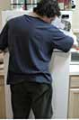 |
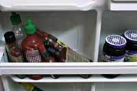 |
"The Mason-Dixon Cupcakes"
fridge contents:
6 containers hot sauce (assorted variety)
2 jars blackberry jam
comments: Seriously, this is way too easy to make fun of. I'm not
even going to bother.
recipe difficulty rating (of 5): 2.5
recipe:
Empty 6 containers of hot sauce into a small mixing bowl. add 2 jars
of blackberry jam. Mix well. Pour mix into cupcake tin. Bake at 350
degrees for 20 minutes. Remove cupcakes. Get in your car and
drive to the Macon, Georgia. Hold a bake sale and prepare for the
choir of "sho is good".
|
| apartment 4A |
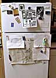 |
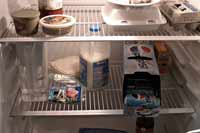 |
"Angry Roommate and Veggie Butter Sauce Casserole"
fridge contents:
1 tub margarine
1 container garden veggie cream cheese
1 jar tomato pasta sauce
1 liter skim ilk
water
some shredded cheese
7 cans diet pepsi
1 box baking soda
comments: Who drinks diet Pepsi and skim milk, but then has an
entire TUB of margarine? What the fuck kind of diet is
this? Fat people. It's like another species.
recipe difficulty rating: 3
recipe:
Pour 3 cans of Diet Pepsi into bowl with the remainder of the baking
soda. I'm guessing that it'll fizz and make a mess. Do this on the
floor of your roommates bedroom. (This is almost as good as setting
off bottle rockets next to their bed. Almost.) Next, add milk to cream
cheese and blend. Once blended, spread in a 9x13 baking pan.
Heat at 350 degrees for 15 minutes. Once solid, add 1 jar of pasta
sauce atop the mixture. Melt the butter with the cheese and add on
top of pasta sauce. Do not stir. Bake at 450 degrees for 20 minutes.
|
| apartment 3C |
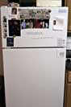 |
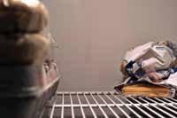 |
"The Marshall-Wich"
fridge contents:
7 slices American cheese
approximately three slices of bread, 2 of those most likely end pieces
eggs, qty: we'll guess three or more
2 bagels looking things
comments:This looks alarmingly like the contents of my fridge, so
I'm reluctant to comment.
recipe difficulty rating: 4 (for balance)
recipe:
Throw out the 2 end pieces. Who fucking eats those anyway?
Scramble two eggs. Cut remaining slice of bread in half.
Heap eggs onto one half of bread. Stack 7 slices of cheese on top
of eggs. Use 1 bagel-esque thing per side to support the size of
sandwich. (see illustration). Place other half of bread on top.
Do not eat. Marvel |
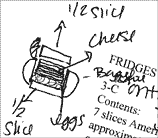 |
| apartment 2B |
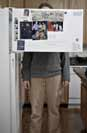 |
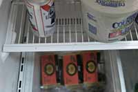 |
"Wisconsin Artery Soup"
fridge contents:
1 tub margarine
1 can beer
3 blocks of cheese comments: For Christmas one year, my mom got me this mix for
"Wisconsin Cheddar Cheese Soup", and I swear to God
it had the same ingredients. I also have a friend who
moved to Chicago from Denver and commented on
how many obese people there are here. She told me
she made the same comment to her dad, and her dad
replied, "Yeah, but you haven't been to Milwaukee yet."
Correlation? You be the judge
recipe difficulty rating: 1
recipe:
Put a big pot on the stove on medium heat. Pour in the can of beer.
Dump in three blocks of cheese. Stir. When it's all melted, drink.
Ya, hey der. |
| apartment 4B |
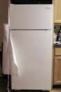 |
|
| |
"Super Intense Dipping Extravaganza"
fridge contents:
1 large container salsa-medium
2 leftover taco bell burritos
1 can red bull
*100 assorted Cohen's hats (party Selection)
*we didn't know what this was, so hats seemed good to us
1 loaf bread
1 tub margarine
dozen eggs.
comments: This is going to be the dullest party ever. Way worse
than church.
recipe difficulty rating: 5 (Do you have 99 friends?)
recipe:
Pound the can of Red Bull in order to prepare to make "Super
Intense Dipping Extravaganza". Empty the contents of burritos into
bowl. In another bowl, melt the margarine, and then add dozen eggs
(whisk eggs once in the mixture). Add this and container of salsa to
burrito mixture. Invite 99 friends. Give them assorted party hats.
Chant someone's name for a few minutes while pumping fists.
Tear up loaf of bread like Jesus, and then dip in mixture. |
| apartment 3A |
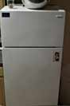 |
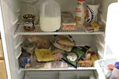 |
"The Intern"
fridge contents:
1 jar salsa- medium
milk
1 pitcher mystery yellow liquid
6 english muffins
creamer
6 hot dogs
1 tub margarine
1 can of soup- open and aged
bacon
1 ½ loaves bread
4 hot dog buns
1 bag shredded mozzarella
1 bag mini carrots- ready for munching
1 container yogurt
5 rolls color film
comments:This is the fridge of two of our staff members, Michael
Tolva and Stephanie McNiel. This also happens to be the
apartment where most of our brainstorming (cough…drinking) takes
place.
recipe difficulty rating: 5
recipe:
Take all the hot dog buns, English muffins and bread. Smush
together until they stick together and resemble a head (use mystery
liquid as necessary to help glue pieces together). Place on cookie
sheet and bake at 400 degrees for ten minutes. Remove bread head
and slather with margarine. Careful not to burn yourself or become
aroused. Take two carrots and jam then into the dough where eyes
should be. Use 1 hot dog (sliced in half) to create a mouth. A yogurt
dollop will do nicely for a nose. Form two strips of bacon into circles
and attach as eyes (melted cheese works for glue). Pour the jar of
salsa on top of the head for hair. Load your camera with film. At this
point, you have two choices 1.) Have a friend consume your "Intern"
- be ready with the camera when they vomit. 2.) Go to the fourth
story of a building. Open window. Throw your creation out the
window. Shoot pictures of the smashed intern. Send your pictures
to Aperture magazine and sit back and wait for the dough to roll in.
You are Dada. |